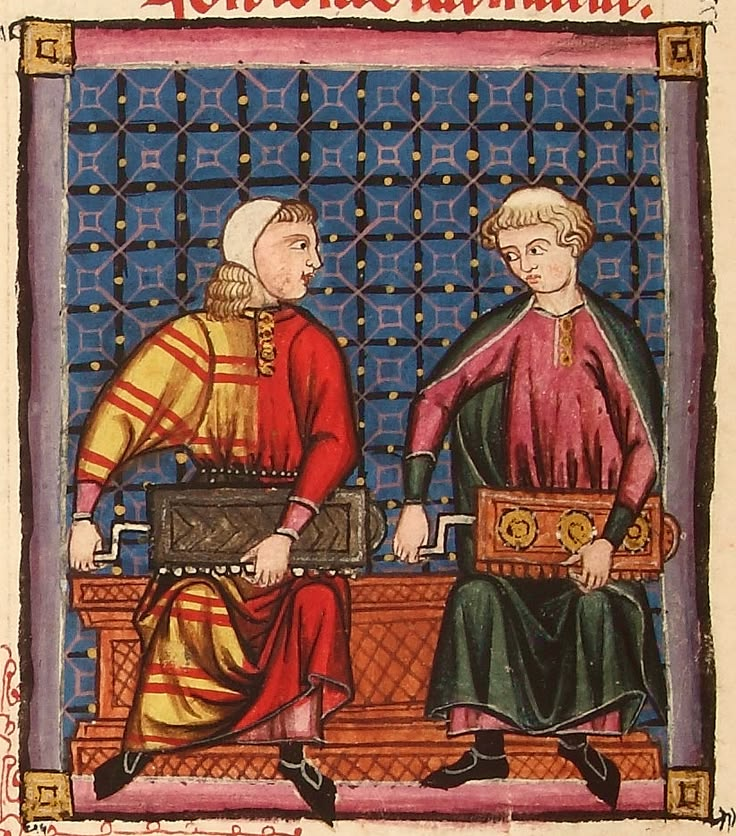
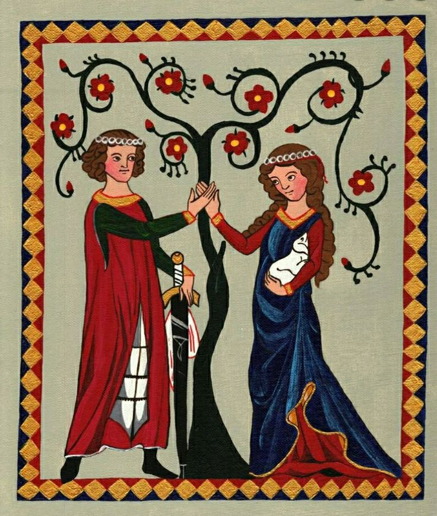
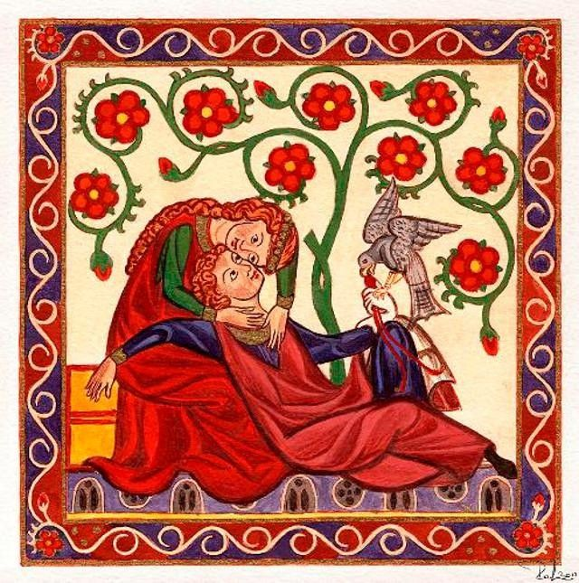
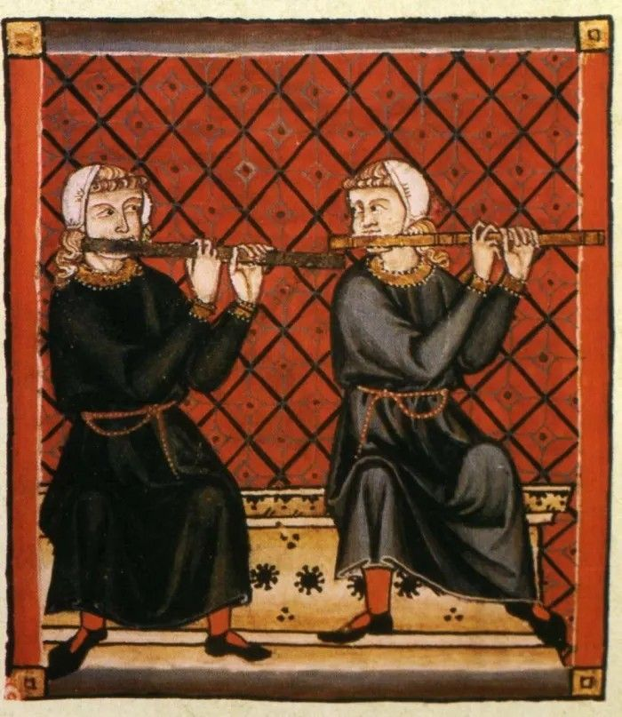
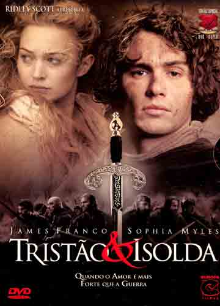
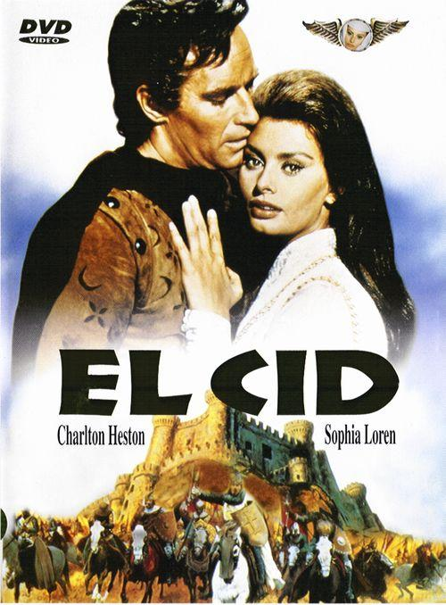
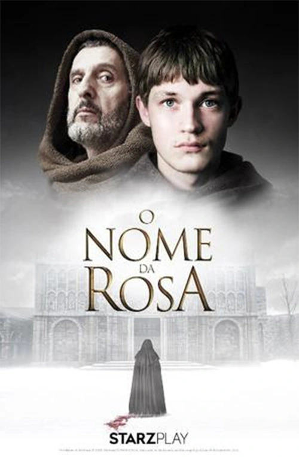

Cantiga de Escárnio
Paio Soares de Taveirós
O Trovadorismo foi a primeira manifestação literária da língua galego-portuguesa. Surgiu durante a Idade Média e teve como principal característica a produção de poemas cantados, conhecidos como cantigas, acompanhados por instrumentos musicais.
O período foi marcado pela consolidação dos reinos cristãos na Península Ibérica durante a Reconquista. A sociedade era fortemente influenciada pela Igreja Católica e pela nobreza feudal.
A economia era baseada na agricultura e nas relações feudais. A sociedade dividia-se principalmente entre clero, nobreza e servos, com pouca mobilidade social.

Paio Soares de Taveirós

Dom Dinis

Martim Codax

João Garcia de Guilhade

2001 • Dir. Brian Helgeland

2006 • Dir. Kevin Reynolds

1961 • Dir. Anthony Mann

1986 • Dir. Jean-Jacques Annaud
A "Cantiga da Ribeirinha", escrita por Paio Soares de Taveirós, é considerada o texto literário mais antigo da literatura portuguesa de que se tem registro.